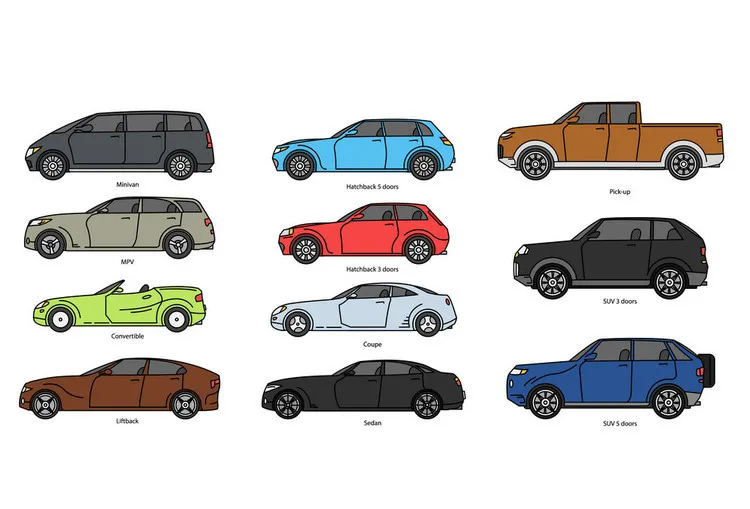

Image Classification
Your phone unlocks as soon as it recognizes your face, Google lens detects an object and searches about the object on the internet, Google translate reads what you write on a piece of paper and translates it, Google photos detect the people in your gallery and groups the photos accordingly. How does all this happen?
Pixels
Each image is divided into tiny undividable squares called pixels. These pixels are of different colors and intensities. A 3x3 picture contains 9 pixels, as shown below. One RGB pixel is represented as a 1x3 matrix ( It has three channels while the grayscale images have only one), with the three numbers representing red, green, and blue intensities, respectively. [1,0,0] means there is no green or blue color, just entirely red. Changing the numbers from 0 to 1 changes the intensity of the colors. Mixing these colors form a new color. [1,0,1] will create a color created by combining red and blue. This is just a small example; HD pictures contain millions of pixels. One megapixel has a million pixels!
RGB images are three-dimensional. The illustration below shows a 5x7 image having 35 RGB pixels. The values of each element in each channel lie between 0 and 255 ( can be converted to values between 0 and 1 by dividing each value by 255). The dimension of the image below is (5,7,3).

Features
Ever wondered how do you differentiate between a car and a truck? You look for the features. They differ in size, number of wheels, and body shape.

How do you identify these features? You often extract these features using the outlines(edges). If you look at the car body (red) in the picture above, the edge of the car body separates it from the windows and the wheels. The red color is separated by the blue color with a black curve(the edge). Your mind then identifies that the red-colored part is the car body while the blue part is the car’s windows. You know this because when you were very young, you were repeatedly shown car pictures and were told what part is the body and what part is the window. So, you first extract different features( wheels, body, windows, and bonnet), then identify them. You know that the body and wheels of a truck are much larger than a car, and the body structure of a truck differs significantly from a car’s.
Image Processing
A kernel matrix is used for edge detection, sharpening, blurring, and other valuable tasks. It is a square matrix that, on convolution with an input image, gives an output image called a feature map with the applied effects (like edge detection). The kernel matrix elements are generally chosen such that they all add up to 0 or 1.